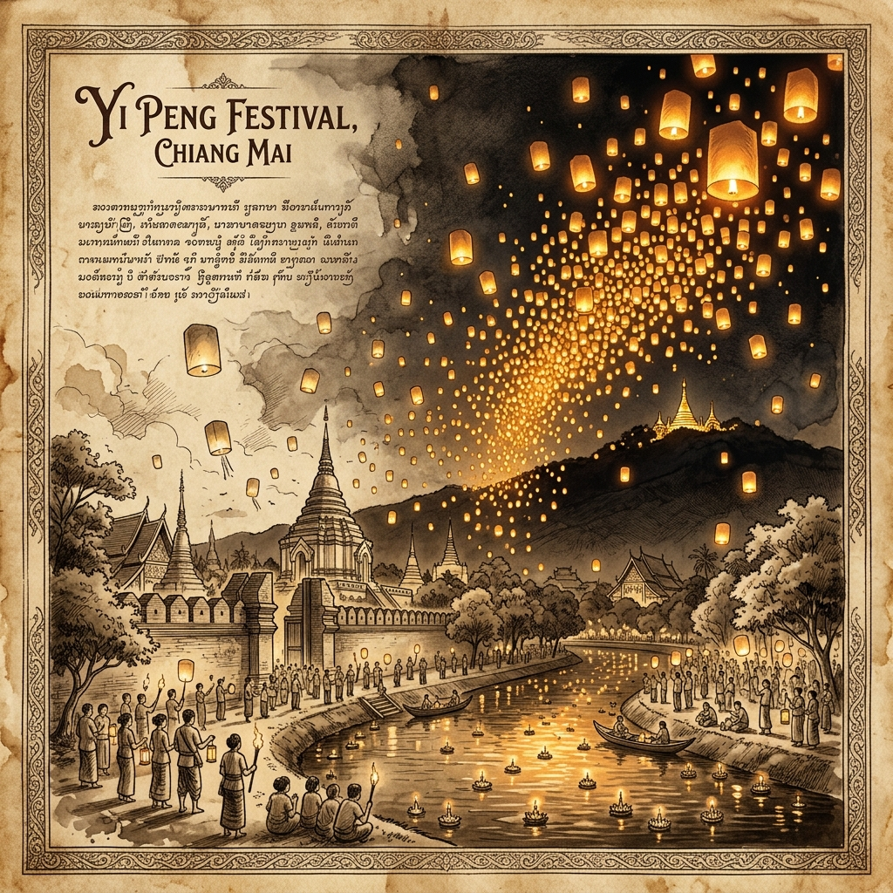
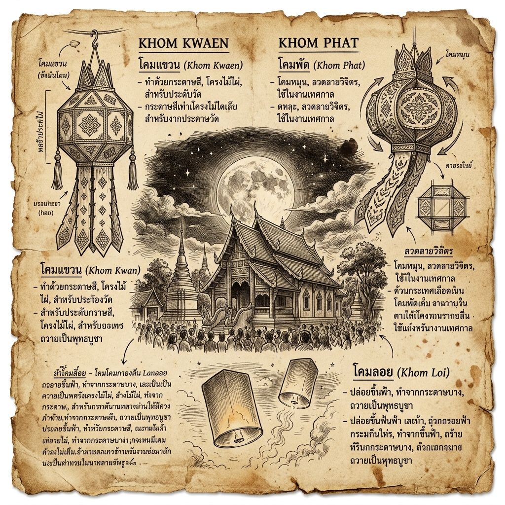
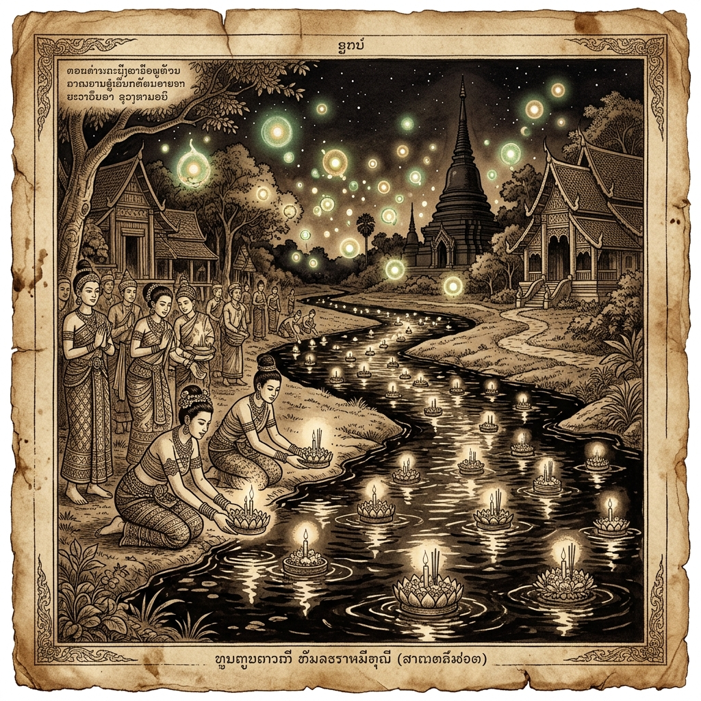
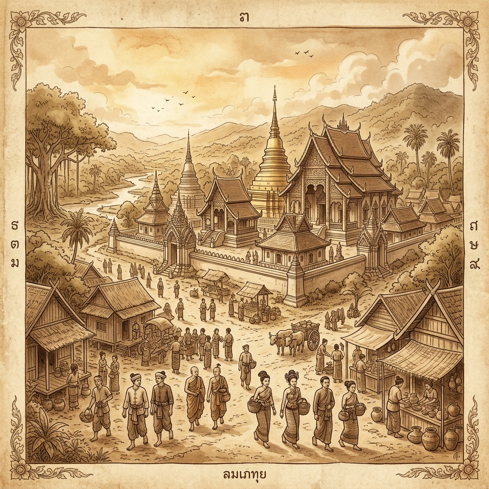

ประวัติและที่มาของเทศกาลยี่เป็ง
เทศกาลแห่งล้านนา
เทศกาลแห่งล้านนา
The Timeline of Light
ลำดับเหตุการณ์สำคัญจากอดีตสู่ปัจจุบันที่หล่อหลอมหัวใจล้านนา
ตำนานยี่เป็งเริ่มต้นขึ้นในนครหริภุญชัย (ลำพูนปัจจุบัน) ภายใต้การปกครองของพระนางจามเทวี ในยุคนั้นมีการทำพิธี "ลอยโขมด" ซึ่งเป็นการบูชาไฟบนผิวน้ำ เพื่อถวายเป็นพุทธบูชาและขอขมาพระแม่คงคา ในค่ำคืนที่มืดมิด แสงเทียนที่ลอยล่องบนลำน้ำกวงและลำน้ำปิงเปรียบเสมือนดวงตาของเหล่าอมนุษย์ที่คอยปกปักรักษาเมือง เป็นจุดเริ่มต้นของศรัทธาที่ผูกพันกับแสงไฟและสายน้ำมากว่าพันปี
ในช่วงพุทธศตวรรษที่ 14 เกิดอหิวาตกโรคระบาดครั้งใหญ่ในหริภุญชัย ทำให้ชาวเมืองจำนวนมากต้องลี้ภัยอพยพไปพึ่งใบบุญที่เมืองสะเทิมและเมืองหงสาวดีนานถึง 6 ปี เมื่อโรคร้ายสงบลงและได้เดินทางกลับบ้านเกิด ชาวเมืองจึงได้ทำ "สะเปา" หรือกระทงรูปเรือ ใส่เครื่องสักการะและไฟสว่างไสว ลอยไปตามลำน้ำปิงและลำน้ำกวงเพื่อส่งความระลึกถึงและกตัญญูต่อญาติมิตรที่ยังติดค้างอยู่ที่เมืองหงสาวดี กลายเป็นรากฐานสำคัญของประเพณีลอยกระทงและยี่เป็งล้านนา
เมื่อพญามังรายสถาปนาเมืองเชียงใหม่ในปี พ.ศ. 1839 ประเพณียี่เป็งได้รับการยกระดับให้เป็นงานหลวงที่ยิ่งใหญ่ขึ้น มีการประดับประดาโคมแขวน (โคมค้าง) ทั่วทั้งเมืองเพื่อต้อนรับพระจันทร์เต็มดวงของเดือนยี่ล้านนา ความเชื่อเรื่องการปล่อยโคมลอย (โคมไฟ) สู่สรวงสวรรค์เพื่อบูชาพระเกศแก้วจุฬามณีได้กลายเป็นหัวใจหลักของการเฉลิมฉลอง เพื่อให้แสงไฟนำพาคำอธิษฐานและเคราะห์ร้ายให้ลอยลับหายไปสู่ท้องฟ้าอันกว้างไกล
หลังสงครามโลกครั้งที่ 2 ยี่เป็งเชียงใหม่ได้ปรับตัวสู่การเป็นเทศกาลสาธารณะที่มีความอลังการ มีการจัดขบวนแห่กระทงใหญ่ที่ตระการตาโดยความร่วมมือของชาวบ้านและส่วนราชการ ภาพโคมนับหมื่นดวงที่ลอยเด่นเหนือประตูเมืองและลำน้ำปิงดึงดูดสายตาชาวโลกให้หันมามองล้านนาในฐานะดินแดนแห่งมนต์เสน่ห์และวัฒนธรรมที่ยังมีลมหายใจ ทำให้เชียงใหม่กลายเป็นจุดหมายปลายทางอันดับหนึ่งของนักเดินทางทั่วโลก
หัวใจของยี่เป็งในปัจจุบันยังคงรักษาเอกลักษณ์ผ่านโคม 4 ชนิดหลัก: โคมถือ, โคมแขวน, โคมหูกระต่าย และโคมลอย พร้อมกับการ "ต๋ามผางประทีป" หรือการจุดเทียนในถ้วยดินเผารอบกำแพงเมืองและหน้าบ้านเรือน เพื่อบูชาพระรัตนตรัยและสร้างความเป็นสิริมงคล แม้ยุคสมัยจะเปลี่ยนไป แต่แสงสว่างจากโคมและศรัทธาที่หนักแน่นของชาวล้านนายังคงสว่างไสวไม่เคยเสื่อมคลาย
Interactive Record
เปิดบันทึกประวัติศาสตร์ยี่เป็งฉบับย่อ ตั้งแต่รากเหง้าหริภุญชัยจนถึงปัจจุบัน...
จากพิธีส่งความระลึกถึง สู่เทศกาลท่องเที่ยวระดับโลก...

เมื่อพญามังรายสร้างเชียงใหม่ในปี 1839...
หน้าถัดไป →

ตำนานอหิวาต์ระบาดในหริภุญชัย...
หน้าถัดไป →

ประเพณีนี้เริ่มต้นที่นครหริภุญชัย...
หน้าถัดไป →

บันทึกการเดินทางของแสงไฟแห่งศรัทธา...
เปิดอ่าน →
• มณี พยอมยงค์. (2547). ตำนานและประเพณีล้านนา. เชียงใหม่: สำนักพิมพ์เมืองโบราณ.
• สงวน โชติสุขรัตน์. (2511). ประเพณีสิบสองเดือนของไทย. กรุงเทพฯ: กรมศิลปากร.
• พิพิธภัณฑสถานแห่งชาติ เชียงใหม่. ประเพณียี่เป็ง กรมศิลปากร
• สำนักงานวัฒนธรรมจังหวัดลำพูน. ประเพณีลอยโขมด หริภุญชัย